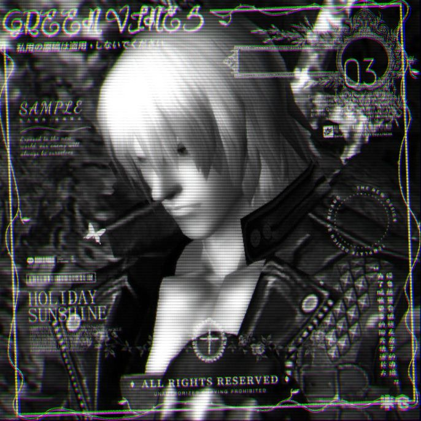

Dante
Bio: Half-demon, half-human, full badass. Legendary Devil Hunter and owner of Devil May Cry, he laughs in the face of danger, slices through demons with flair, and cracks a one-liner before the smoke clears. Fueled by rebellion, pizza, and a taste for justice, he’s the guy Hell warns its minions about.
Favourite Food: Pizza
Weapons of choice: